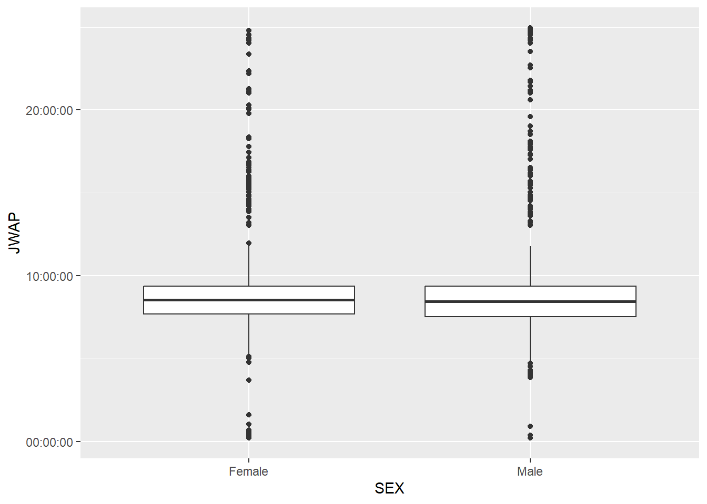

library(tidyverse)
library(httr)
library(jsonlite)
library(janitor)
library(quantreg)
library(roxygen2)ST 558 Project One
Project Overview
Our goal is to write functions that will manipulate and process data sets that come from a census API. We will query the Public Use Microdata Sample (PUMS) Census API, creating a function that allows the user to call the API with different combinations of variables. We’ll then create generic functions to automatically summarize and plot certain returned data, providing numerical and graphical summaries. Lastly, we’ll write up this document via quarto to describe our thought process and give examples of using the functions.
Required Packages
Load required packages for project.
Data Processing
Before creating a function with the API, we first had to validate the integrity of variables. Considering that we have both numerical and categorical variables, we decided to look through each and account for the factors and numerical ranges as appropriate. After validating the variables, we created the API. The API is created so that it prints out the requested categorical, numerical, and time variables with conditions and geographical subset. The user has free rein to choose one or multiple of each type of variable, and if a user would like to select multiple years of data, the multi_api function allows them to do so.
Prepare Time Variables
The time variables need to be handled slightly differently than the other numeric variables. Since there are NA’s, and also since we are working with a range of values, we have decided to find the median (or exact middle) of each time to use for JWAP and JWDP. In particular, JWAP is the time of arrival at work by hour and minute, and JWDP is the time of departure for work by hour and minute. Before we run the API function, we first decided to create a median time table for JWAP and JWDP.
First, create JWAP table:
URL_jwap <- "https://api.census.gov/data/2022/acs/acs1/pums/variables/JWAP.json"
jwap_time_table <- GET(URL_jwap)
jwap_time_table <- fromJSON(rawToChar(jwap_time_table$content))
jwap_time_table <- as_tibble(jwap_time_table$values$item)
jwap_time_table <- pivot_longer(jwap_time_table,
cols = 1:ncol(jwap_time_table),
names_to = "code",
values_to = "range") |>
filter(code != 0) |>
separate_wider_delim(range, delim = " ", names = c("time1", "AMPM1", "to", "time2", "AMPM2"))
jwap_time_table <- jwap_time_table |>
mutate(median_time = if_else(
AMPM1 == "a.m.",
hms::as_hms(
hms::parse_hm(jwap_time_table$time1) +
((hms::parse_hm(jwap_time_table$time2) -
hms::parse_hm(jwap_time_table$time1)) / 2)),
hms::as_hms(hms::parse_hm("12:00") +
hms::parse_hm(jwap_time_table$time1) +
((hms::parse_hm(jwap_time_table$time2) -
hms::parse_hm(jwap_time_table$time1)) / 2)))) |>
mutate(median_time = if_else(median_time > hms::as_hms("12:00:00") &
median_time < hms::as_hms("12:59:59") &
AMPM1 == "a.m.",
median_time - hms::as_hms("12:00:00"),
median_time)) |>
select(code, median_time) |>
arrange(median_time) |>
add_row(code = "0", median_time = hms::as_hms(NA))
jwap_time_table$code <- as.numeric(jwap_time_table$code)
jwap_time_table# A tibble: 286 × 2
code median_time
<dbl> <time>
1 1 02'00"
2 2 07'00"
3 3 12'00"
4 4 17'00"
5 5 22'00"
6 6 27'00"
7 7 34'30"
8 8 42'00"
9 9 47'00"
10 10 54'30"
# ℹ 276 more rowsSecond, create JWDP table:
URL_jwdp <- "https://api.census.gov/data/2022/acs/acs1/pums/variables/JWDP.json"
jwdp_time_table <- GET(URL_jwdp)
jwdp_time_table <- fromJSON(rawToChar(jwdp_time_table$content))
jwdp_time_table <- as_tibble(jwdp_time_table$values$item)
jwdp_time_table <- pivot_longer(jwdp_time_table,
cols = 1:ncol(jwdp_time_table),
names_to = "code",
values_to = "range") |>
filter(code != 0) |>
separate_wider_delim(range, delim = " ", names = c("time1", "AMPM1", "to", "time2", "AMPM2"))
jwdp_time_table <- jwdp_time_table |>
mutate(median_time = if_else(
AMPM1 == "a.m.",
hms::as_hms(
hms::parse_hm(jwdp_time_table$time1) +
((hms::parse_hm(jwdp_time_table$time2) -
hms::parse_hm(jwdp_time_table$time1)) / 2)),
hms::as_hms(hms::parse_hm("12:00") +
hms::parse_hm(jwdp_time_table$time1) +
((hms::parse_hm(jwdp_time_table$time2) -
hms::parse_hm(jwdp_time_table$time1)) / 2)))) |>
mutate(median_time = if_else(median_time > hms::as_hms("12:00:00") &
median_time < hms::as_hms("12:59:59") &
AMPM1 == "a.m.",
median_time - hms::as_hms("12:00:00"),
median_time)) |>
select(code, median_time) |>
arrange(median_time) |>
add_row(code = "0", median_time = hms::as_hms(NA))
jwdp_time_table$code <- as.numeric(jwdp_time_table$code)
jwdp_time_table# A tibble: 151 × 2
code median_time
<dbl> <time>
1 1 00:14:30
2 2 00:44:30
3 3 01:14:30
4 4 01:44:30
5 5 02:14:30
6 6 02:44:30
7 7 03:04:30
8 8 03:14:30
9 9 03:24:30
10 10 03:34:30
# ℹ 141 more rowsPrepare Factor Levels
For categorical variables, call variable descriptions to retrieve factor levels and labels. Then, with similar logic to the time variables, make sure that the corresponding factors are in the correct places. Furthermore, make sure the logic is cohesive and able to be called by the API.
URL_SCHL <- "https://api.census.gov/data/2022/acs/acs1/pums/variables/SCHL.json"
SCHL_vars <- GET(URL_SCHL)
SCHL_varsnow <- fromJSON(rawToChar(SCHL_vars$content))
SCHL_varstibble <- as_tibble(SCHL_varsnow$values$item)
SCHL_codes <- SCHL_varstibble |>
pivot_longer(cols = 1:ncol(SCHL_varstibble), names_to = "code", values_to = "range") |>
mutate(code = ifelse(nchar(code) == 2 & substr(code, 1, 1) == "0", substr(code, 2, 2), code))URL_SCH <- "https://api.census.gov/data/2022/acs/acs1/pums/variables/SCH.json"
SCH_vars <- GET(URL_SCH)
SCH_varsnow <- fromJSON(rawToChar(SCH_vars$content))
SCH_varstibble <- as_tibble(SCH_varsnow$values$item)
SCH_codes <- pivot_longer(SCH_varstibble,
cols = 1:ncol(SCH_varstibble),
names_to = "code",
values_to = "range")URL_HHL <- "https://api.census.gov/data/2022/acs/acs1/pums/variables/HHL.json"
HHL_vars <- GET(URL_HHL)
HHL_varsnow <- fromJSON(rawToChar(HHL_vars$content))
HHL_varstibble <- as_tibble(HHL_varsnow$values$item)
HHL_codes <- pivot_longer(HHL_varstibble,
cols = 1:ncol(HHL_varstibble),
names_to = "code",
values_to = "range")URL_JWTRNS <- "https://api.census.gov/data/2022/acs/acs1/pums/variables/JWTRNS.json"
JWTRNS_vars <- GET(URL_JWTRNS)
JWTRNS_varsnow <- fromJSON(rawToChar(JWTRNS_vars$content))
JWTRNS_varstibble <- as_tibble(JWTRNS_varsnow$values$item)
JWTRNS_codes <- JWTRNS_varstibble |>
pivot_longer(cols = 1:ncol(JWTRNS_varstibble), names_to = "code", values_to = "range") |>
mutate(code = ifelse(nchar(code) == 2 & substr(code, 1, 1) == "0", substr(code, 2, 2), code))URL_HISPEED <- "https://api.census.gov/data/2022/acs/acs1/pums/variables/HISPEED.json"
HISPEED_vars <- GET(URL_HISPEED)
HISPEED_varsnow <- fromJSON(rawToChar(HISPEED_vars$content))
HISPEED_varstibble <- as_tibble(HISPEED_varsnow$values$item)
HISPEED_codes <- pivot_longer(HISPEED_varstibble,
cols = 1:ncol(HISPEED_varstibble),
names_to = "code",
values_to = "range")URL_FER <- "https://api.census.gov/data/2022/acs/acs1/pums/variables/FER.json"
FER_vars <- GET(URL_FER)
FER_varsnow <- fromJSON(rawToChar(FER_vars$content))
FER_varstibble <- as_tibble(FER_varsnow$values$item)
FER_codes <- pivot_longer(FER_varstibble,
cols = 1:ncol(FER_varstibble),
names_to = "code",
values_to = "range")URL_SEX <- "https://api.census.gov/data/2022/acs/acs1/pums/variables/SEX.json"
SEX_vars <- GET(URL_SEX)
SEX_varsnow <- fromJSON(rawToChar(SEX_vars$content))
SEX_varstibble <- as_tibble(SEX_varsnow$values$item)
SEX_codes <- pivot_longer(SEX_varstibble,
cols = 1:ncol(SEX_varstibble),
names_to = "code",
values_to = "range")Now that this is complete, we can finish Data Processing by creating the API.
Create the API
The API starts by creating blank variables so that a clean slate is run each time. Then, global valid variables of each possible user selection (numerical, categorical, date, and geographical level) are listed for use in the API and later functions. Specific decisions are outlined in documentation and comments within the function.
First, global variables are initialized and valid inputs are established.
#' setup global variables to be returned
#' @noRd
#blank variables for clean slate
census_tib <- as_tibble(data.frame())
num_var <- ""
cat_var <- ""
#all possible variable values
valid_num_var <- c("AGEP", "GASP", "GRPIP", "JWAP", "JWDP", "JWMNP", "PWGTP")
valid_date_var <- c("JWAP", "JWDP")
valid_cat_var <- c("FER", "HHL", "HISPEED", "JWTRNS", "SCH", "SCHL", "SEX")
valid_geo_level <- c("ALL", "REGION", "DIVISION", "STATE")Then, a helper function is created. Note that the helper function both takes in the URL with GET and also creates a tibble. The tibble is then formatted, wrangled, and massaged to be nice and neat. The tibble deletes duplicate columns and uses all the ranges assigned before to correctly display the categorical factors.
get_url <- function(URL_id) {
census_info <- GET(URL_id)
census_df <- fromJSON(rawToChar(census_info$content))
#create a tibble
census_tib <- census_df |>
as_tibble() |>
row_to_names(row_number = 1)
#append columns to the tibble based on the selected variables from before
for (column in colnames(census_tib)) {
if (column %in% valid_date_var) {
census_tib[[column]] <- as.numeric(census_tib[[column]])
} else if (column %in% valid_num_var) {
census_tib[[column]] <- as.numeric(census_tib[[column]])
} else if (column %in% valid_cat_var) {
census_tib[[column]] <- as.factor(census_tib[[column]])
}
}
#create statements for the time variables that formats them based on the definitions from up above if they are present.
if(str_detect(URL_id,"JWAP")) {
census_tib <- census_tib |>
left_join(
jwap_time_table,
by = c("JWAP" = "code")
) |>
select(-JWAP) |>
rename(JWAP = median_time)
}
if(str_detect(URL_id,"JWDP")) {
census_tib <- census_tib |>
left_join(
jwap_time_table,
by = c("JWDP" = "code")
) |>
select(-JWDP) |>
rename(JWDP = median_time)
}
#format the sex based on above designated factor level
if (str_detect(URL_id, "SEX")) {
census_tib <- census_tib |>
left_join(
SEX_codes,
by = c("SEX" = "code")
) |>
select(-SEX) |>
rename(SEX = range)
}
#format the fer based on above designated factor level
if (str_detect(URL_id, "FER")) {
census_tib <- census_tib |>
left_join(
FER_codes,
by = c("FER" = "code")
) |>
select(-FER) |>
rename(FER = range)
}
#format the HISPEED based on above designated factor level
if (str_detect(URL_id, "HISPEED")) {
census_tib <- census_tib |>
left_join(
HISPEED_codes,
by = c("HISPEED" = "code")
) |>
select(-HISPEED) |>
rename(HISPEED = range)
}
#format the SCH based on above designated factor level
#notice we had to take SCH as an exact string to not mess with SCHL
if (str_detect(URL_id, "\\bSCH\\b")) {
census_tib <- census_tib |>
left_join(
SCH_codes,
by = c("SCH" = "code")
) |>
select(-SCH) |>
rename(SCH = range)
}
#format the HHL based on above designated factor level
if (str_detect(URL_id, "HHL")) {
census_tib <- census_tib |>
left_join(
HHL_codes,
by = c("HHL" = "code")
) |>
select(-HHL) |>
rename(HHL = range)
}
#format the JWTRNS based on above designated factor level
if (str_detect(URL_id, "JWTRNS")) {
census_tib <- census_tib |>
left_join(
JWTRNS_codes,
by = c("JWTRNS" = "code")
) |>
select(-JWTRNS) |>
rename(JWTRNS = range)
}
#format the SCHL based on above designated factor level
if (str_detect(URL_id, "SCHL")) {
census_tib <- census_tib |>
left_join(
SCHL_codes,
by = c("SCHL" = "code")
) |>
select(-SCHL) |>
rename(SCHL = range)
}
#' Function for creating data assigns a class of census to resulting tibble
#' @noRd
class(census_tib) <- c("census", class(census_tib))
#' Ensure resulting tibble (census_tib) and selected variables are returned to the global environment for use in other functions and analysis
#' Superassigmment operator (<<-) is intentional to ensure local variables are passed to the global environment
#' A list including num_var, cat_var and census_tib is returned for redudancy and convenience so user assign function to an object and then specify the corresponding version of the variable created
#' @noRd
num_var <<- num_var
cat_var <<- cat_var
census_tib <<- census_tib
}The api_query function takes in the desired user variables and calls the census data api to take in those values. The variables are taken as columns, and then are sent to the get_url helper function. There are many cleaning techniques used to correctly concatenate the different variables as well as adding conditions and subsets. The numerical variables, categorical variables, and final tibble is returned as a list.
#' Begin query building
#' Numeric variable PWGTP is required for function and always called so is not included as a default that can be overwritten
#' @noRd
api_query <- function(surv_year = "2022", num_var = c("AGEP", "PWGTP"), cat_var = "SEX", geo_level = "ALL", condition = NULL, geo_subset = "STATE:11") {
#ensure user selection is within permissible values
if (surv_year < 2010 || surv_year > 2022 || surv_year == 2020) {
stop("Year must be between 2010 and 2022, excluding 2020.")
}
if (any(!num_var %in% valid_num_var)) {
stop("Invalid Numeric Variable")
}
if (any(!cat_var %in% valid_cat_var)) {
stop("Invalid Categorical Variable")
}
if (any(!geo_level %in% valid_geo_level)) {
print(geo_level)
stop("Invalid Geography Level")
}
#output unique usable strings for the numerical, categorical, and geo level variables
num_var_string <- paste(unique(num_var), collapse = ",")
cat_var_string <- paste(unique(cat_var), collapse = ",")
#if geo level is all, then don't do anything, else then start it as null to be replaced
if (!geo_level == "ALL") {
geo_level_string <- paste(unique(geo_level), collapse = ",")
}
else {
geo_level_string = NULL
}
#start with the URl base, and then append the required numerical, categorical, and geo level with the designated survey years
URL_base <- "https://api.census.gov/data/"
URL_id <- paste0(URL_base, surv_year, "/acs/acs1/pums?get=PWGTP,", num_var_string, ",", cat_var_string, ",",geo_level_string)
#make room for conditions, including subsetting by cat/num and also by region
if (!is.null(condition)) {
condition_string <- paste(condition, collapse = "&")
URL_id <- paste0(URL_id, "&", condition_string)
}
if (!is.null(geo_subset)) {
region_string <- paste(geo_subset, collapse = "&")
URL_id <- paste0(URL_id, "&for=", region_string)
}
#allow user to see their finalized url, then parse it for parameters
print(URL_id)
parsed_url <- parse_url(URL_id)
#pipe to fix spacing and commas, otherwise error
parsed_url$query$get <- parsed_url$query$get |>
strsplit(split = ",") |>
unlist() |>
unique() |>
setdiff(names(parsed_url$query)) |>
paste(collapse = ",")
#clean up url
URL_id <- gsub("%2C", ",", build_url(parsed_url))
#call the helper function defined before!
get_url(URL_id)
return(list(
num_var = num_var,
cat_var = cat_var,
census_tib = census_tib
))
}Multi-Year API
This function takes the api_query function and allows the user, along with the previous defaults from that function, to select multiple years and return one large tibble that binds the multiple years by row.
#using ..., we can actually also call the api_query function along with specifying multiple surv_years
multi_api <- function(surv_years, ...) {
multi_tibs <- lapply(surv_years, function(surv_year) {
#calls api_query
tib_call <- api_query(surv_year = surv_year, ...)
final_tib <- tib_call$census_tib
final_tib <- final_tib |>
#allows us to concatenate the correct surv_year
mutate(surv_year = surv_year)
return(final_tib)
})
entire_tib <- bind_rows(multi_tibs)
#the tibble with all years rowbinded
return(entire_tib)
}Test the API Function
Ensure the api_query function is working properly by feeding in some numeric, date, and categorical variables. Furthermore, let’s condition on ALL, with AGEP=30 and subsetting the appropriate state.
api_query(surv_year = "2022", num_var =c("AGEP","PWGTP"), cat_var = c("HISPEED", "SCHL", "SCH", "FER", "SEX", "SEX"), geo_level = "ALL", condition = "AGEP=30", geo_subset = "STATE:11")[1] "https://api.census.gov/data/2022/acs/acs1/pums?get=PWGTP,AGEP,PWGTP,HISPEED,SCHL,SCH,FER,SEX,&AGEP=30&for=STATE:11"Warning: The `x` argument of `as_tibble.matrix()` must have unique column names if
`.name_repair` is omitted as of tibble 2.0.0.
ℹ Using compatibility `.name_repair`.$num_var
[1] "AGEP" "PWGTP"
$cat_var
[1] "HISPEED" "SCHL" "SCH" "FER" "SEX" "SEX"
$census_tib
# A tibble: 156 × 8
PWGTP AGEP state SEX FER HISPEED SCH SCHL
<dbl> <dbl> <chr> <chr> <chr> <chr> <chr> <chr>
1 129 30 11 Female No Yes No, … Mast…
2 90 30 11 Male N/A (less than 15 years/greater… Yes No, … Some…
3 86 30 11 Male N/A (less than 15 years/greater… Yes No, … Bach…
4 69 30 11 Female No Yes No, … Mast…
5 342 30 11 Male N/A (less than 15 years/greater… Yes No, … Mast…
6 40 30 11 Male N/A (less than 15 years/greater… Yes No, … Bach…
7 77 30 11 Female No Yes No, … Mast…
8 100 30 11 Male N/A (less than 15 years/greater… Yes No, … Mast…
9 30 30 11 Male N/A (less than 15 years/greater… Yes No, … Bach…
10 339 30 11 Male N/A (less than 15 years/greater… Yes No, … Bach…
# ℹ 146 more rowsVoila! Notice that we output our respective link, the numerical and categorical variables, and the final tibble. Also, any duplicate columns called through user error are removed!
Test the Multi-API Function
Ensure the multi_api function is working properly by combining years and feeding in some numeric, date, and categorical variables.
multi_api(surv_years = c("2015", "2021"), num_var = c("JWDP","GRPIP","GRPIP"), cat_var = c("FER", "HHL", "SEX"), condition="SEX=1", geo_subset= "STATE:11")[1] "https://api.census.gov/data/2015/acs/acs1/pums?get=PWGTP,JWDP,GRPIP,FER,HHL,SEX,&SEX=1&for=STATE:11"
[1] "https://api.census.gov/data/2021/acs/acs1/pums?get=PWGTP,JWDP,GRPIP,FER,HHL,SEX,&SEX=1&for=STATE:11"# A tibble: 6,424 × 8
PWGTP GRPIP state JWDP SEX FER HHL surv_year
<dbl> <dbl> <chr> <time> <chr> <chr> <chr> <chr>
1 18 0 11 03:32 Male N/A (less than 15 years/great… N/A … 2015
2 28 22 11 04:47 Male N/A (less than 15 years/great… Engl… 2015
3 50 22 11 NA Male N/A (less than 15 years/great… Engl… 2015
4 81 65 11 05:07 Male N/A (less than 15 years/great… Othe… 2015
5 80 65 11 NA Male N/A (less than 15 years/great… Othe… 2015
6 64 65 11 NA Male N/A (less than 15 years/great… Othe… 2015
7 63 0 11 04:17 Male N/A (less than 15 years/great… Engl… 2015
8 130 0 11 NA Male N/A (less than 15 years/great… Engl… 2015
9 36 0 11 NA Male N/A (less than 15 years/great… Engl… 2015
10 210 28 11 03:32 Male N/A (less than 15 years/great… Engl… 2015
# ℹ 6,414 more rowsVoila! Notice that we output our respective link, the numerical and categorical variables, and the final tibble. Also, any duplicate columns called through user error are removed! Furthermore, we wanted to show that we can condition on categorical variables, and our tibble correctly rowbinds.
Finally, test the empty function call (i.e., test the default query) to reflect assigned `state` of 11 (i.e., DC). This is the tibble to be used in creating summaries below.
#this should be last call to api_query, which establishes defaults for summary functions
default_query <- api_query()[1] "https://api.census.gov/data/2022/acs/acs1/pums?get=PWGTP,AGEP,PWGTP,SEX,&for=STATE:11"default_query$num_var
[1] "AGEP" "PWGTP"
$cat_var
[1] "SEX"
$census_tib
# A tibble: 6,718 × 4
PWGTP AGEP state SEX
<dbl> <dbl> <chr> <chr>
1 81 18 11 Female
2 67 18 11 Female
3 85 19 11 Male
4 51 18 11 Male
5 56 23 11 Female
6 80 20 11 Male
7 213 34 11 Female
8 175 66 11 Male
9 84 24 11 Male
10 62 19 11 Female
# ℹ 6,708 more rowsWriting a Generic Function for Summarizing
For the variables returned from the API call (or some subset thereof), generate specific numeric and graphical summaries to describe the data.
Numeric Summary
Write a function that produces means and standard deviations for our numeric variable(s) and counts for our categorical variable(s).
census_summary <- function(tib = census_tib, cat_var_s = c(intersect(colnames(census_tib), valid_cat_var)), num_var_s = c(setdiff(intersect(colnames(census_tib), valid_num_var), "PWGTP"))) {
#' function takes in variables used in api query call to find descriptive stratistics
#' defaults to variables from most recent census_tib return
#' @noRd
#initialize lists
sample_means <- list()
sample_sds <- list()
all_counts <- list()
#calculates all numericals minus jwdp and jwap and the weights
for(name in num_var_s) {
if(name %in% colnames(tib) &
name %in% valid_num_var &
!name %in% c("PWGTP", "JWDP", "JWAP")) {
sample_mean <- sum(tib[[name]] * tib$PWGTP)/sum(tib$PWGTP)
sample_sd <- sqrt(sum((tib[[name]]^2)*tib$PWGTP)/sum(tib$PWGTP)-sample_mean^2)
sample_means[[name]] <- sample_mean
sample_sds[[name]] <- sample_sd
}
#calculates times in a different way due to NA's and time
else if(name %in% c("JWAP", "JWDP")) {
tib <- na.omit(tib)
sample_mean <- (sum(as.numeric(tib[[name]]) * tib$PWGTP)/sum(tib$PWGTP))
sample_sd <- (sqrt(sum((as.numeric(tib[[name]])^2)*tib$PWGTP)/sum(tib$PWGTP)-sample_mean^2))
sample_mean <- hms::round_hms(hms::as_hms(sample_mean), secs = 1)
sample_sd <- hms::round_hms(hms::as_hms(sample_sd), secs = 1)
sample_means[[name]] <- sample_mean
sample_sds[[name]] <- sample_sd
}
else {
stop("Please enter numeric variables used in API call except PWGTP")
}
}
#categorical variable counts
for(name in cat_var_s) {
if(name %in% colnames(tib) & name %in% valid_cat_var) {
counts <- tib |>
group_by(tib[[name]]) |>
summarise(count = n()) |>
rename_with(~ name, 1)
all_counts[[name]] <- counts
} else {
stop("Please enter categorical variables used in API call")
}
}
#return as a named list
return(list(sample_means = sample_means, sample_sds = sample_sds, all_counts = all_counts))
}Test out this function by running census_summary on SEX and AGEP variables per the default api_query.
cen_sum <- census_summary(cat_var_s = "SEX", num_var_s = "AGEP")
print(cen_sum)$sample_means
$sample_means$AGEP
[1] 37.05794
$sample_sds
$sample_sds$AGEP
[1] 21.39444
$all_counts
$all_counts$SEX
# A tibble: 2 × 2
SEX count
<chr> <int>
1 Female 3583
2 Male 3135Validate that the call above returns the same output as an empty function call.
default_cen_sum <- census_summary()
print(default_cen_sum)$sample_means
$sample_means$AGEP
[1] 37.05794
$sample_sds
$sample_sds$AGEP
[1] 21.39444
$all_counts
$all_counts$SEX
# A tibble: 2 × 2
SEX count
<chr> <int>
1 Female 3583
2 Male 3135If you are interested in a more complex census summary, we can use our multi_api function from earlier. It will still be compatible:
multi_api(surv_years = c("2015", "2021"), num_var = c("JWDP","GRPIP","GRPIP"), cat_var = c("FER", "HHL", "SEX"), condition="SEX=1", geo_subset= "STATE:11")[1] "https://api.census.gov/data/2015/acs/acs1/pums?get=PWGTP,JWDP,GRPIP,FER,HHL,SEX,&SEX=1&for=STATE:11"
[1] "https://api.census.gov/data/2021/acs/acs1/pums?get=PWGTP,JWDP,GRPIP,FER,HHL,SEX,&SEX=1&for=STATE:11"# A tibble: 6,424 × 8
PWGTP GRPIP state JWDP SEX FER HHL surv_year
<dbl> <dbl> <chr> <time> <chr> <chr> <chr> <chr>
1 167 25 11 04:02 Male N/A (less than 15 years/great… Engl… 2015
2 58 0 11 NA Male N/A (less than 15 years/great… Span… 2015
3 41 0 11 NA Male N/A (less than 15 years/great… Span… 2015
4 265 19 11 02:47 Male N/A (less than 15 years/great… Span… 2015
5 292 19 11 02:47 Male N/A (less than 15 years/great… Span… 2015
6 207 19 11 02:47 Male N/A (less than 15 years/great… Span… 2015
7 75 0 11 03:32 Male N/A (less than 15 years/great… Engl… 2015
8 37 38 11 04:32 Male N/A (less than 15 years/great… Engl… 2015
9 61 0 11 NA Male N/A (less than 15 years/great… N/A … 2015
10 161 0 11 09:17 Male N/A (less than 15 years/great… Engl… 2015
# ℹ 6,414 more rowscensus_summary()$sample_means
$sample_means$GRPIP
[1] 16.80561
$sample_means$JWDP
05:02:38
$sample_sds
$sample_sds$GRPIP
[1] 26.64306
$sample_sds$JWDP
02:22:48
$all_counts
$all_counts$SEX
# A tibble: 1 × 2
SEX count
<chr> <int>
1 Male 964
$all_counts$FER
# A tibble: 1 × 2
FER count
<chr> <int>
1 N/A (less than 15 years/greater than 50 years/ male) 964
$all_counts$HHL
# A tibble: 6 × 2
HHL count
<chr> <int>
1 Asian and Pacific Island languages 12
2 English Only 659
3 N/A (GQ/vacant) 61
4 Other Indo-European languages 70
5 Other Language 44
6 Spanish 118Notice that we output a named list for the means and standard deviations of the called variables, where duplicates are ignored. Furthermore, we created a function that outputs all count data for each categorical variable. It also works on time! I set it back to the default query as well.
Setting it back to the default query for the next steps,
default_query <- api_query()[1] "https://api.census.gov/data/2022/acs/acs1/pums?get=PWGTP,AGEP,PWGTP,SEX,&for=STATE:11"default_query$num_var
[1] "AGEP" "PWGTP"
$cat_var
[1] "SEX"
$census_tib
# A tibble: 6,718 × 4
PWGTP AGEP state SEX
<dbl> <dbl> <chr> <chr>
1 81 18 11 Female
2 67 18 11 Female
3 85 19 11 Male
4 51 18 11 Male
5 56 23 11 Female
6 80 20 11 Male
7 213 34 11 Female
8 175 66 11 Male
9 84 24 11 Male
10 62 19 11 Female
# ℹ 6,708 more rowsGraphical Summary
Create a generic plot() function for a census class tibble. Require the user to specify one categorical variable and one numeric variable for plotting purposes.
census_plot <- function(tib = census_tib, cat_var_s, num_var_s) {
#' function generates a boxplot based upon one numeric and one categorical variable from api_query call
#' defaults most recent tibble returned from api_query
#' @noRd
#plots numerial using tib sans weight variable
for(name in num_var_s) {
if(name %in% colnames(tib) &
name %in% valid_num_var &
name != "PWGTP") {
y <- tib[[name]]
} else {
stop("Please enter numeric variables used in API call")
}
}
#plots categorical using tib
for(name in cat_var_s) {
if(name %in% colnames(tib) &
name %in% valid_cat_var) {
x <- tib[[name]]
} else {
stop("Please enter categorical variables used in API call")
}
}
#boxplot calls x and y variables from for loops above
ggplot(tib,
aes(x = x, y = y, weight = PWGTP)) +
geom_boxplot() +
xlab(cat_var_s) +
ylab(num_var_s)
}Test the `census_plot` function on SEX and AGEP variables per the default api_query.
census_plot(cat_var_s = "SEX", num_var_s = "AGEP")
Investigative Task
We wanted to investigate if JWDP (time departure for work), JWAP (time arrival at work), and JWMNP (travel time to work) were different (on average) between SEX (male and female) given STATE = 11 for the year 2021. In particular, 2021 was in the midst of COVID and a lot of interesting trends emerged. Whilst more complicated statistical measures would be required to find the true answer, we will just observe final boxplots!
#query the api with the desired year and numerical and categorical variables
api_query(surv_year = c("2021"), num_var = c("JWDP","JWAP","JWMNP"), cat_var = ("SEX"), condition=NULL, geo_subset= "STATE:11")[1] "https://api.census.gov/data/2021/acs/acs1/pums?get=PWGTP,JWDP,JWAP,JWMNP,SEX,&for=STATE:11"$num_var
[1] "JWDP" "JWAP" "JWMNP"
$cat_var
[1] "SEX"
$census_tib
# A tibble: 7,162 × 6
PWGTP JWMNP state JWAP JWDP SEX
<dbl> <dbl> <chr> <time> <time> <chr>
1 55 0 11 NA NA Male
2 156 0 11 NA NA Male
3 6 0 11 NA NA Female
4 28 0 11 NA NA Female
5 27 0 11 NA NA Male
6 69 0 11 NA NA Female
7 68 0 11 NA NA Male
8 31 0 11 NA NA Male
9 83 0 11 NA NA Male
10 5 0 11 NA NA Female
# ℹ 7,152 more rows#summary function takes defaults
census_summary()$sample_means
$sample_means$JWMNP
[1] 7.742825
$sample_means$JWAP
09:21:33
$sample_means$JWDP
05:05:36
$sample_sds
$sample_sds$JWMNP
[1] 16.4837
$sample_sds$JWAP
03:46:34
$sample_sds$JWDP
02:16:08
$all_counts
$all_counts$SEX
# A tibble: 2 × 2
SEX count
<chr> <int>
1 Female 985
2 Male 964#run plot function with 3 different numerical variables for 3 boxplots
census_plot(census_tib, num_var_s = c("JWDP"), cat_var_s = "SEX")census_plot(census_tib, num_var_s = c("JWAP"), cat_var_s = "SEX")
census_plot(census_tib, num_var_s = c("JWMNP"), cat_var_s = "SEX")Based on the boxplots alone, we see a very slight difference in females vs males in JWAP, where females on average appear to arrive at work slightly later than men. In JWMNP , we notice that females are largely more concentrated around shorter travel times to work, whereas men may take longer to travel to work on average. Notice the indecisive language, we would have to do more robust statistical testing to find out if there were actually significant differences between groups!
Project Conclusion
Our goal was to write functions that would manipulate and process data sets that came from a census API. We queried the Public Use Microdata Sample (PUMS) Census API, creating a function that allowed the user to call the API with different combinations of variables. We then created generic functions to automatically summarize and plot certain returned data, providing numerical and graphical summaries. Lastly, we wrote up this document via quarto to describe our thought process and give examples of using the functions, and published an HTML report.